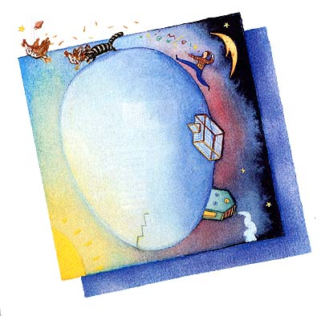

THAT'S IT, FOLKS!
WHAT A GARRULOUS OLD COOTE, I think to myself as we walk up the hill. But I'm the one who's out of breath. Emil Coote has a patriot's white hair, blue eyes and red neck, and at 65, a hardier cardiovascular system than I have. Plus, he won World War II.
"So Ike turns to me and says, `What do you think, Private Coote?' I told him, `General Eisenhower, I'm a farmer and I know weather. And June 6 is my birthday. It never rains on my birthday.' Well, there's the chickens. Take your pick. Buck each."
I scan his huge herd of birds as they cluck and jerk around. Occasionally one smashes the ground several times with its face, which doesn't seem to hurt it. I point. "Okay, I'll take four of those brown ones, four whites and, oh heck, four speckled."
A wrinkle on his puckered brow furrows, divides and multiplies. "You know much about chickens, son?"
They lay eggs. Beyond that, I treasure my ignorance. "Not really. This is my wife's field of empowerment."
He uploads this concept with a hum. "Well, you want a rooster?"
Why would we want a rooster? Breeding a chicken for noise is irrational. I say as much to him. He then takes a complete visual inventory from my sneakers to my Irish bog hat.
"You married, son?"
"Well, yes."
"Well, then. Roosters are boy chickens."
Perhaps sensing that my A-prompt isn't booting up, he tries for parity baud: "See, the hens will lay, but they won't be happy." He smiles, snowy eyebrows bouncing. Then he nods at one big rooster, brightly colored and tough looking. "You can have Bruce Springsteen, there. No charge."
Before I leave, he stresses the importance of heating the birds' water in the winter and plying them with expen ive egg mash and other personal services to make their stay a pleasant one. Then he goes inside, probably to drink lithium straight from the bottle. When I get home, my wife stares at our new rooster and then at me. "For pleasure?" "And for free," I mutter, unloading the crates.
"Mustn't frustrate the chickens, your expert advises. By the way, Mr. Coote is beyond the help of modern psychiatry."
Joy demurs. "Oh, nonsense. Around here, he's a legend. He knows everything about chickens."
This fowl trip is Joy's bailiwick, not mine. She has read the books, memorized the breeds and will graph the egg production. That makes her sheriff of the chickens, and I'm not about to argue.
But I'm the architect of Squarehenge, their new home. That's what I called it when I topped the uprights with the lintel poles, in a 20-foot square. It reminded me vaguely of Stonehenge; although less so after wrapping it, top and sides, with chicken wire. The coop inside features ergonomic nest boxes, whitewash decor and plenty of headroom. My expertise is carpentry, not poultry.
The Boss and his chickens flutter about inside; one even attempts a hopping flight, but the enclosure has a wire roof to thwart predators. Totally secure, for sure.
Until four in the morning, that is, when Bruce screeches bloody murder to the four winds of heaven. Somnambulating, I fish in the nightstand form a home defense mechanism, and make it outside in time to see a raccoon breaking for the treeline, his mouth full of feathered marshmallow. I take aim. Fuzzily, I decide not to fire, because I subscribe to principles of nonviolence toward all living things - and because a diaphragm box doesn't quite have the range.
However, Squarehenge is paved with big feath ers. Several chickens have slipped the surly bonds of life, and I'm prepared to amend my philosophy for one raccoon.
Next morning, we inspect for mode of entry. No holes in the wire, no tunnels underneath. A puzzle. Two nights later, it happens again; this time, I'm properly armed, and rocket out the door shouting "Halk! Halk, oo hungitch!" The raccoon turns, and does something with his paw that I can't quite see. Shotguns come guaranteed to hit something, but the recoil knocks the flashlight out of my mouth. I miss.
"Same raccoon, you think?" Joy asks as we survey the carnage.
Warily: "Couldn't tell; he was wearing a mask."
Two more chickens are toast, and Bruce, pretty enough when fully, assembled, is now a rainbow of fragments, almost abstract art in his demise. Next morning, still no visible holes in Squarehenge; it's a lockedcoop mystery. How in the Houdini did he do it?
Back at Mr. Coote's place the next morning, he tells me. "The door, son. What kind of latch you have?"
"Hook and eye, but he couldn't..." "Sure he could, son; did it, too. Just climbed the wire and popped it. Raccoons are smart, and they got hands. Get yourself a good lock; only thing they can't open is a Jorgensen six-pin."
As I select replacements to restock Squarehenge, he talks about another impregnable surround: the Battle of the Bulge. "So I say, `General McAuliffe, sir, how about Nuts?' After all, it meant the same as the dirty words he said when the Germans asked him to surrender. Look in the history books; you'll see he said `Nuts' to 'em."
"That's fascinating," I agree. And how singularly appropriate. "So, I'll take two of the browns, four more whites..."
These chickens do not even reach their pull date before Rocky has his way with them. The time, of course, is during his favorite shopping hours; by now, I sleep with my hand in the nightstand, thereby cut ting my time to 10 seconds. And finally I've got the right tool for the right job.
Even so, I miss. At least 14 rounds of jacketed 9mm chew up turf behind his running form, but that's all. When the clip is empty, he boldly turns; in the flickering flashlight beam, it seems that he raises one little paw and retracts a few toes. Then he vanishes. If I saw that right, they do look like hands.
On the door of Squarehenge, the locking peg I whittled has been removed. I see clouds of white feathers that hang in the air, dismantled chickens and gore everywhere; and I think to myself, what a wonderful world.
"Aw, you can't shoot a raccoon," Mr. Coote chuckles the next day. "Coulda told you that. They're too fast, too smart and too cute. You know what you need?"
A Starlight scope and Kalishnikov assault rifle would be my first choice. "No. What?"
"A live trap, son. You catch 'em unharmed, feed 'em anchovy pizzas for a week and play Barry Manilow around the clock. When you turn 'em loose, they never come back. C'mon, I've got one in the closet you can borrow."
Sounds like a bunch of horsenuts to me; but he's been right every time so far. I don't know what to believe anymore. Until we go inside his house. Then I notice the pictures on the mantel. While he goes to fetch the trap, I step up and take a closer look.
One is unmistakably Ike himself, shaking hands with a young private wearing a know-it-all expression, and beneath an autograph, the words: To Sergeant Emil Coote - Right as usual.
Another photo, taken in deep snow, features much the same scene but with a different famous general. It's also inscribed briefly: Thanks. Good word.
There's even a recent photo of Dan Quayle, with a chilling, childlike scrawl: You called it. I hope you're right about '96 too. ''
|
 |
|
|